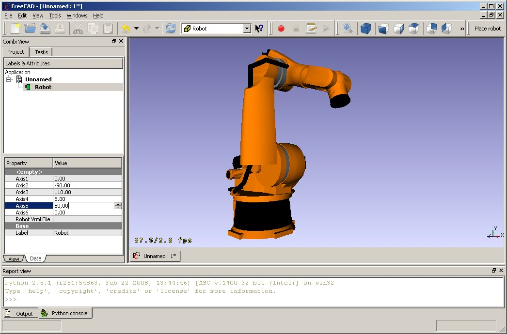

Questo è l'articolo di progetto per il progetto Robot. Esso segue le regole della metodologia Getting things done. I progetti sono raccolti nel Piano di sviluppo (Development roadmap).
Finalità e principi
Questo progetto dovrebbe impostare le tecnologie principali per una simulazione realistica di robot in FreeCAD. Nella prima fase ha come riferimento i robot industriali a 6 assi.
Risultati
Simulazione di robot

Riflessioni
Librerie in questo campo
- OROCOS librerie per la cinematica inversa
- ROBOOP mira direttamente alla simulazione di robot, ma sembra inattivo.
- Beremiz un PLC OpenSource.
Norme per la comunicazione
- OPC UA per comunicare con i PLC
- RRS-II standard tedesco per la comunicazione nella simulazione di robot
Middleware per la comunicazione
Middleware sono i programmi intermediari
Prodotti commerciali in questo settore
Conoscenze
Organizzazione
- Rappresentazione visiva di robot a 6 assi (fatto)
- Calcolo della cinematica in avanti e inversa di robot arbitrari (fatto)
- RobotLib, dynamic readably robot types (work in progress)
- Simulazione della traiettoria (in corso)
- Simulazione di collisione
- rilevamento delle modifiche di configurazione e delle singolarità
- Stima del tempo
- volume utilizzato (in programma)
- Post processore per robot Kuka (in corso)
- Processo e controllo della cella di lavoro (prevista)
- Creazione di filmati di simulazione (in programma)
Azioni successive
- Gestione della traiettoria e dei punti del percorso.
{kind=link}